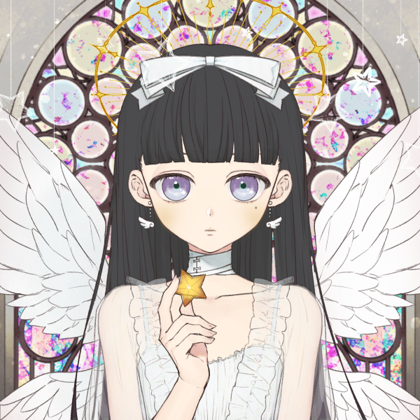
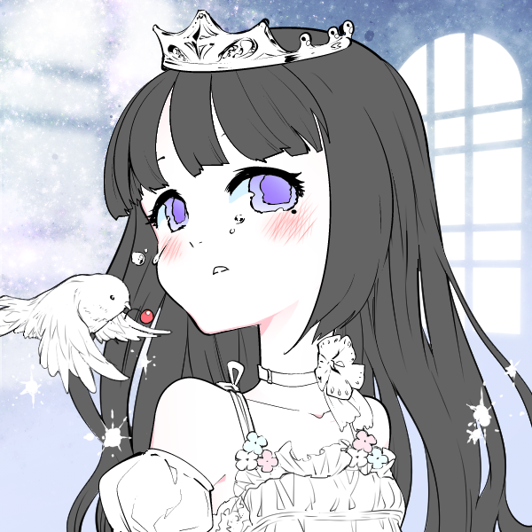
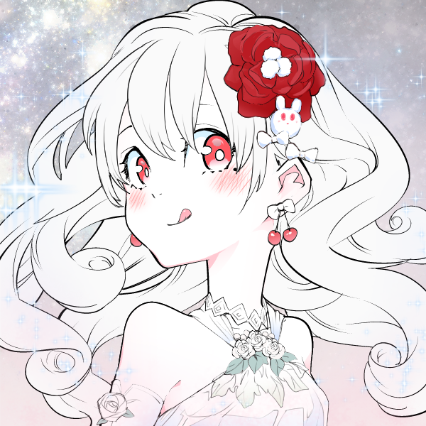
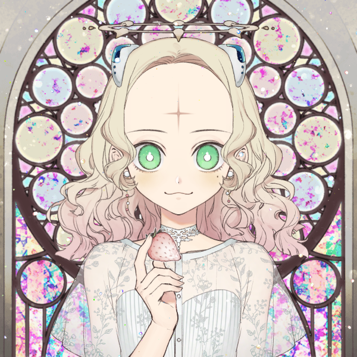
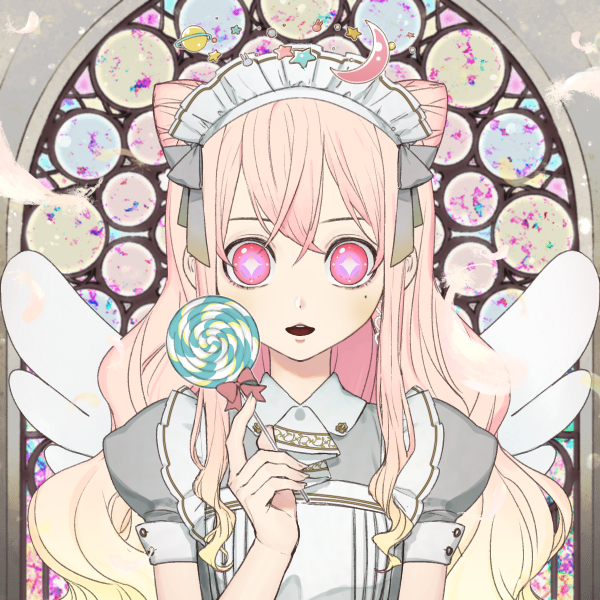

本页自设图一般生成自 Picrew
# 世界观
这是存在于某处的幻想世界。
# 人物
# 上位世界
# LostKo
- 设定
- 种族：天使
- 发式：黑长直、齐刘海
- 瞳色：紫
- 性格：三无
- 印象图


# YumeKo
- 设定
- 种族：思念体
- 发式：白色长发
- 瞳色：粉
- 性格：元气
- 印象图

# 下位世界
# 霜月琉璃
- 标志： ❄️
- 日本語：霜 月 琉璃
- 罗马音：Shimotsuki Ruri
- 设定
- 种族：魔女
- 职业：疫医
- 发式：蓝色短发
- 瞳色：异色瞳 - 左蓝右红，右侧眼罩
- 性格：大和抚子
- 印象图
# 观月真由理
- 标志： 🌙
- 日本語：観 月 真由理
- 罗马音：Mizuki Mayuri
- 设定
- 种族：吸血鬼
- 职业：黑客
- 发式：金色卷发
- 瞳色：正常 - 绿色，黑化 - 红色
- 性格：腹黑
- 人格开关：正常化 - 草莓，黑化 - 血、满月
- 印象图

# 樱月小鸟
- 标志： 🌸
- 日本語：桜 月 小 鳥
- 罗马音：Sazuki Kotori
- 设定
- 种族：机娘
- 职业：偶像
- 发式：粉色长发
- 瞳色：十字粉瞳
- 性格：天然
- 印象图
